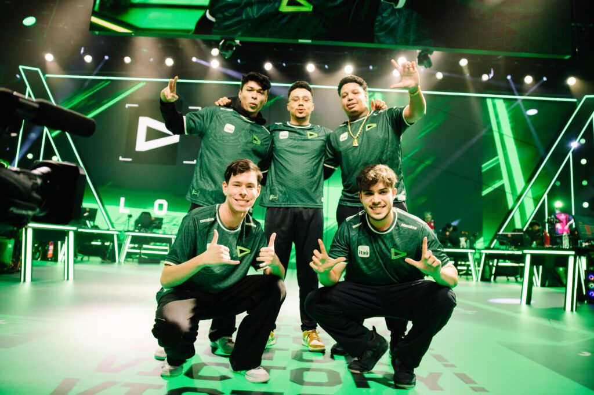

LOUD 2022
Challengers Brasil – 1º Split
Em sua estreia no competitivo de VALORANT, a LOUD conquistou o primeiro título ao vencer a Ninjas in Pyjamas por 3x0, garantindo uma premiação de R$ 100 mil.
Challengers Brasil – 2º Split
Mantendo o desempenho excepcional, a LOUD conquistou o segundo título consecutivo ao derrotar novamente a Ninjas in Pyjamas por 3x0. A formação campeã permaneceu a mesma do primeiro split.
Champions 2022
O ápice da trajetória da LOUD ocorreu no VALORANT Champions 2022, onde a equipe se sagrou campeã mundial ao vencer a OpTic Gaming por 3x1 na final. Essa conquista histórica marcou a primeira vez que uma equipe brasileira venceu um campeonato mundial de VALORANT.
A final registrou um recorde de audiência, atingindo 1,5 milhão de espectadores simultâneos, a maior marca da história do VALORANT até então
LOUD 2023
LOCK//IN São Paulo 2023
Primeiro torneio internacional do ano, realizado no Brasil.
LOUD chegou à final após vencer Gen.G, NRG e DRX.
Perdeu a decisão para a Fnatic por 3x2 em uma final acirrada, após estar vencendo por 2x0.
VCT Américas 2023
Em 2023, a LOUD continuou sua trajetória de sucesso ao conquistar o título do VCT Américas, tornando-se a primeira campeã das Ligas das Américas ao vencer a NRG por 3x0. Essa vitória garantiu à equipe vagas no VALORANT Masters Tokyo e no Champions Los Angeles.
Champions 2023
LOUD garantiu vaga ao vencer o VCT Américas 2023.Fase de grupos dominante: venceu NRG e DRX.Nos playoffs, caiu na chave inferior após perder para a Fnatic.Eliminada nas quartas de final pelo EG, terminando entre os 3 melhores times do mundo.
Apesar de não repetir o título de 2022, a LOUD se manteve entre as principais equipes do cenário internacional.


LOUD 2024
Mudanças na Formação
No final de 2023, a equipe passou por alterações importantes:
Erick "aspas" Santos, uma das estrelas do time, transferiu-se para a Leviatán.
Para preencher a vaga deixada por aspas, a LOUD contratou Gabriel "qck" Lima, ex-jogador da FURIA Esports.
Desempenho Competitivo
A temporada de 2024 apresentou desafios para a LOUD:
No início do ano, a equipe conquistou uma vaga no torneio de abertura das VCT Américas e também se classificou para o Masters Madrid.
Contudo, durante a primeira metade da temporada regular, a LOUD não obteve o desempenho esperado, terminando na 5ª posição, o que foi insuficiente para se qualificar para o Masters Shanghai.Essa foi a primeira vez desde sua entrada no VALORANT que a LOUD não conseguiu se classificar para um evento internacional.
Alterações no Elenco
Em resposta aos resultados abaixo do esperado:
Gabriel "qck" Lima deixou a equipe.
Bryan "pANcada" Luna retornou à LOUD após um período no banco de reservas da Sentinels.
Mesmo com essas mudanças, a ausência de um duelista de origem impediu a equipe de alcançar vagas para o champions, encerrando sua temporada de forma precoce.
LOUD 2025
Saídas Importantes
No final de 2024, a LOUD sofreu perdas significativas em seu elenco:
Felipe "Less" Basso transferiu-se para a Team Vitality
Matias "Saadhak" Delipetro juntou-se à Karmine Corp.
Planejamento para 2025
A LOUD apostou na contratação de jogadores experientes, como Douglas "dgzin" Silva e Vinicius "v1nNy" Gonçalves.
Jordan "stk" Nunes, que atuava como assistente técnico há dois anos, foi promovido a treinador principal
